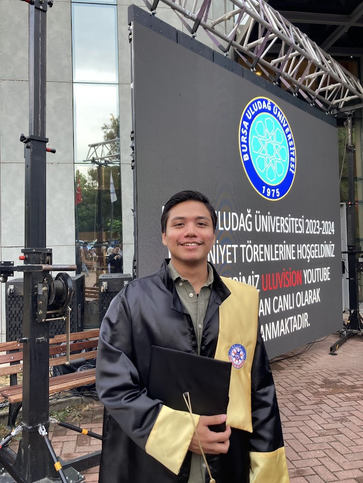

Izza Prasatya Arief
Personal Access

Summary
Geography graduate specializing in hydrology, geomorphology, and geospatial analysis. Experienced in hydrological modeling,
flood risk and groundwater analysis, erosion and geohazard risk assessment, and landslide susceptibility mapping (SHALSTAB).
Proficient in geomorphometry, terrain analysis, shoreline change assessment (DSAS), and extreme value analysis (Gumbel Method).
Skilled in GIS, remote sensing, and ecological modeling, using tools such as GRASS GIS, HEC-RAS, HEC-HMS, SWAT, and MaxEnt.
Passionate about applying advanced geoscientific methods to environmental sustainability, disaster risk management, and infrastructure
planning.
Education
- Uludağ University, BA in Geography (2020 - 2025)
Work Experiences
-
Quadrant.io - Maps Quality Assurance
July 2023 - April 2024
- Reviewed Point of Interest (POI) by filling in essential attribute data, such as coordinates, category, POI name, street name,
and house number using the outline from Standard Operating Procedure (SOP) established for this project.
-
Analyzed photos from users in the field and utilizing Google Maps and Google Streetview to verify accurate information.
-
Business Development Intern - Pertamina Power Indonesia
July 2023 - August 2023
-
Analyzed land use in Jambi City and Muaro Jambi Regency to identify areas suitable for solar PV installations based on local
regulations governing project activities.
-
Conducted a suitability analysis by calculating solar radiation in potential areas while considering factors such as proximity
to water access (rivers, lakes, seas), high-voltage electrical substations, gas pipelines, and topographic conditions.
-
Identified a 2000-hectare land parcel in Muaro Jambi for solar PV installation and supported similar projects in Batam, Bintan,
and Karimun Islands.
Project Experienced
-
Urban Heat Island Phenomenon and Its Relationship with Bursa City’s Landcover - Uludağ University
October 2023 - May 2024
-
Mapped and analyzed Bursa’s landcover using the supervised classification method in ArcGIS Pro to calculate the percentage of
landcover in the study area and assess its albedo properties in relation to solar radiation and season change.
-
Calculated the Urban Heat Island effect using Landsat 8 satellite images captured during the winter of 2022
(December 2021 - March 2022) and the summer of 2022 (June 2022 - September 2022).
-
Analyzed the differences in landcover changes between winter and summer, as well as the variations in Urban Heat Island values
influenced by different land cover types.
-
Calculated the Urban Thermal Field Variance Index (UTFVI) in Bursa City Center to evaluate the ecological parameters that are
beneficial for urban planning.
Skills
- Geospatial & Environmental Analysis:
- Spatial Analysis & Geoprocessing
- Land Use & Land Cover (LULC) Mapping
- Urban Heat Island (UHI) & UTFVI Analysis
- NDVI & Vegetation Index Analysis
- Solar Radiation Analysis
- Wildlife Suitability Analysis.
- Hydrology & Geomorphology:
- Hydrological Modeling
- Flood Risk & Groundwater Analysis
- Erosion Risk & Geohazard Risk Analysis (Earthquake, Flood)
- Geomorphometry & Terrain Analysis
- Landslide Susceptibility Mapping (SHALSTAB)
- Extreme Value Analysis (Gumbel Method)
- Shoreline Change Analysis (DSAS)
- GIS, Remote Sensing & Ecological Modeling:
- Geographic Information Systems (GIS)
- Remote Sensing & Image Classification
- Geospatial Modeling & Data Processing
- MaxEnt for Forest Fire Modeling
- Carbon Storage & Sequestration Analysis
- Photogrammetric Data Processing
- Software Proficiency:
- ArcGIS Pro
- QGIS
- SAGA
- GRASS
- HEC-RAS
- HEC-HMS
- SWAT
- MaxEnt
- Agisoft Metashape
- Languanges:
- Bahasa Indonesia (Native)
- English (Fluent)
- Turkish (Fluent)